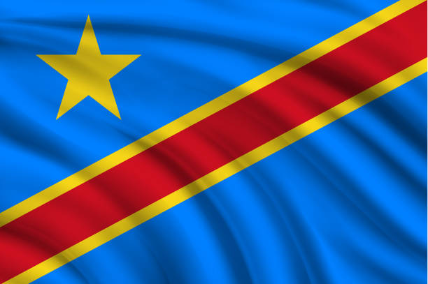

About me
Hey, my name is Jeancy, born in DR Congo, in Mbuji-Mayi city. I am 26 years old right now, and I am pursuing an online degree in Software Development at BYU-Pathway. I love playing music, especially the keyboard, and spending all my time coding, which is my passion.
Mbuji-Mayi, D R Congo
Mbuji-Mayi, the 17th largest city in DR Congo, lies in the heart of the country. Known for its rich diamond deposits, it plays a significant role in the nation's economy. The city's vibrant culture is reflected in its people's love for singing, praying, and enjoying life. Despite challenges, Mbuji-Mayi remains a lively place where traditions and modernity blend harmoniously.